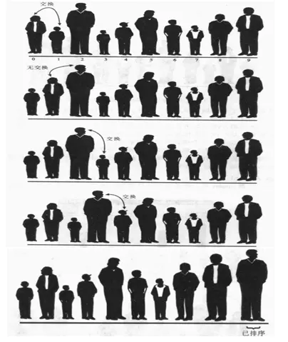
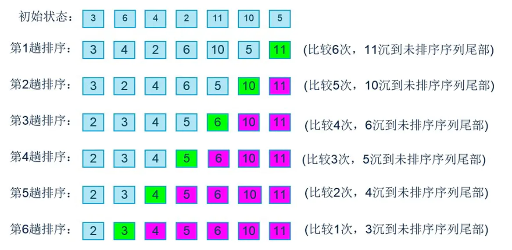
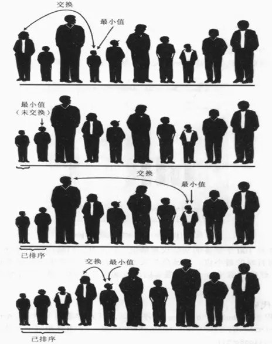
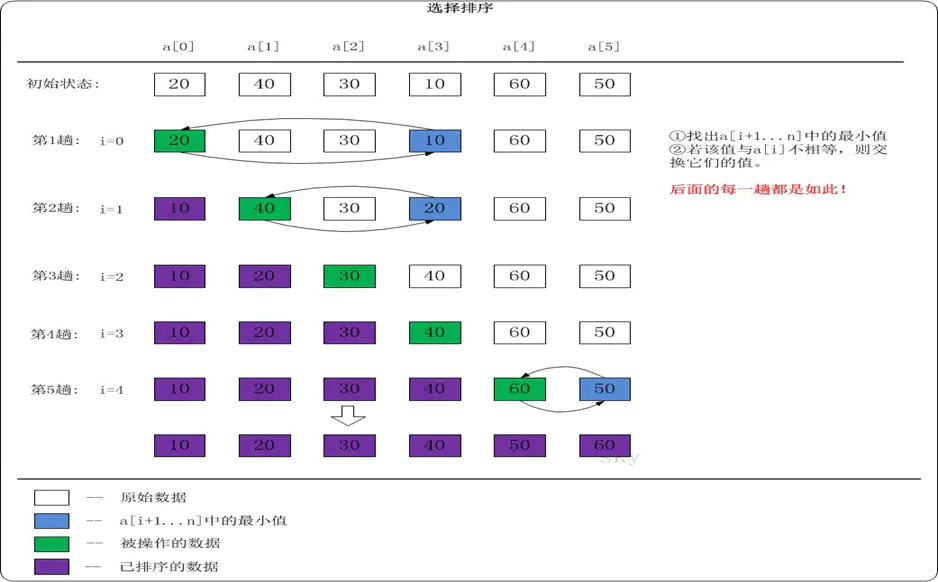
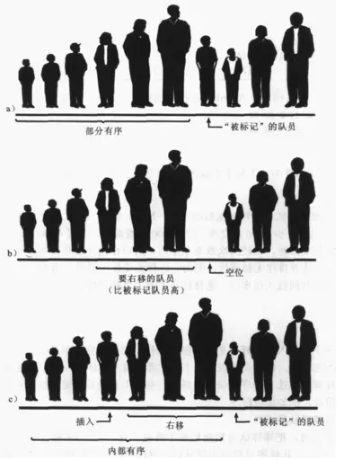

准备
大O表示法
- 大O表示法是描述性能和复杂度的一种表示方法.
- 推导大O表示法通常我们会使用如下规则
- 用常量1取代运行时间中的所有加法常量
- 在修改后的运行次数函数中, 只保留最高阶项
- 如果最高阶项存在并且不是1, 则去除与这个项相乘的常数
初始化
1 | // 封装ArrayList |
所有排序的序列为：3 5 4 2 11 10 5
冒泡排序
冒泡排序算法相对其他排序运行效率较低, 但是在概念上它是排序算法中最简单的.
冒泡排序的思路
- 对未排序的各元素从头到尾依次比较相邻的两个元素大小关系
- 如果左边的队员高, 则两队员交换位置
- 向右移动一个位置, 比较下面两个队员
- 当走到最右端时, 最高的队员一定被放在了最右边
- 按照这个思路, 从最左端重新开始, 这次走到倒数第二个位置的队员即可.
- 依次类推, 就可以将数据排序完成

冒泡排序的实现
1 | // 冒泡排序 3 5 4 2 11 10 5 |

冒泡排序的效率
- 第一次循环6次比较, 第二次5次比较, 第三次4次比较….直到最后一趟进行了一次比较.
- 对于7个数据项比较次数: 6 + 5 + 4 + 3 + 2 + 1
- 对于N个数据项呢? (N - 1) + (N - 2) + (N - 3) + … + 1 = N * (N - 1) / 2
- 比较次数
- (N - 1) / 2 = N²/2 - N/2,根据规则2, 只保留最高阶项, 编程N² / 2
- N² / 2, 根据规则3, 去除常量, 编程N²
- 因此冒泡排序的大O表示法为O(N²)
- 交换次数
- 如果有两次比较才需要交换一次(不可能每次比较都交换一次.), 那么交换次数为N² / 4
- 交换次数的大O表示也是O(N²)
选择排序
选择排序的思路
- 选定第一个索引位置，然后和后面元素依次比较
- 如果后面的队员, 小于第一个索引位置的队员, 则交换位置
- 经过一轮的比较后, 可以确定第一个位置是最小的
- 然后使用同样的方法把剩下的元素逐个比较即可
- 可以看出选择排序，第一轮会选出最小值，第二轮会选出第二小的值，直到最后

- 选择排序第一次将第0位置的人取出, 和后面的人(1, 2, 3…)依次比较, 如果后面的人更小, 那么就交换.
- 这样经过一轮之后, 第一个肯定是最小的人.
- 第二次将第1位置的人取出, 和后面的人(2, 3, 4…)依次比较, 如果后面的人更小, 那么就交换.
- 这样经过第二轮后, 第二个肯定是次小的人.
选择排序的实现
1 | // 选则排序 |

选择排序的效率
- 比较次数
- 选择排序和冒泡排序的比较次数都是N*(N-1)/2, 也就是O(N²).
- 交换次数
- 选择排序的交换次数只有N-1次, 用大O表示法就是O(N)
- 比较完后面所有的值才交换（冒泡是比较一次可能交换一次）
插入排序
- 插入排序是简单排序中效率最好的一种
- 插入排序也是学习其他高级排序的基础
插入排序的思路
- 插入排序思想的核心是局部有序
- 从第一个元素开始，该元素可以认为已经被排序
- 取出下一个元素，在已经排序的元素序列中从后向前扫描
- 如果该元素（已排序）大于新元素，将该元素移到下一位置
- 重复上一个步骤，直到找到已排序的元素小于或者等于新元素的位置
- 将新元素插入到该位置后, 重复上面的步骤.

- 插入排序应该从下标值1开始(因为0位置默认可以被认为是有序的)
- 从1位置开始取出元素, 并且判断该元素的大小和0位置进行比较, 如果1位置元素小于0位置元素, 那么交换, 否则不交换.
- 上面步骤执行完成后, 0 - 1位置已经排序好.
- 取出2位置的元素, 和1位置进行比较:
- 如果2位置元素大于1位置元素, 说明2位置不需要任何动作. 0 - 1 - 2已经排序好.
- 如果2位置元素小于1位置元素, 那么将1移动到2的位置, 并且2继续和0进行比较.
- 如果2位置元素大于0位置的元素, 那么将2位置放置在1的位置, 排序完成. 0 - 2 - 1搞定.
- 如果2位置元素小于0位置的元素, 那么将0位置的元素移动到1位置, 并且将2位置的元素放在0位置, 2 - 0 - 1搞定.
- 按照上面的步骤, 依次找到最后一个元素, 整个数组排序完成.
插入排序的实现
1 | // 插入排序 |
- 代码序号1: 获取数组的长度.
- 代码序号2: 外层循环, 从1位置开始, 因为0位置可以默认看成是有序的了.
- 代码序号3: 记录选出的i位置的元素, 保存在变量temp中. i默认等于j
- 代码序号4: 内层循环
- 内层循环的判断j - 1位置的元素和temp比较, 并且j > 0.
- 那么就将j-1位置的元素放在j位置.
- j位置向前移.
- 代码序号5: 将目前选出的j位置放置temp元素.
插入排序的效率
- 比较次数
- 第一趟时, 需要的最多次数是1, 第二趟最多次数是2, 依次类推, 最后一趟是N-1次
- 因此是1 + 2 + 3 + … + N - 1 = N * (N - 1) / 2
- 每趟发现插入点之前, 平均只有全体数据项的一半需要进行比较
- 我们可以除以2得到 N * (N - 1) / 4. 所以相对于选择排序, 其他比较次数是少了一半的
- 插入排序的复制次数
- 第一趟时, 需要的最多复制次数是1, 第二趟最多次数是2, 依次类推, 最后一趟是N-1次.
- 因此是1 + 2 + 3 + … + N - 1 = N * (N - 1) / 2.